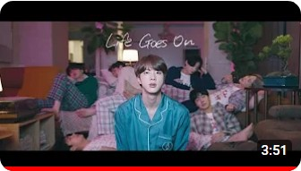
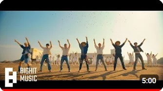
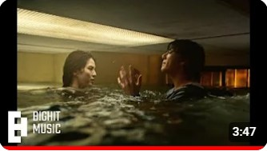

BTS
Videos recomendados
  
BTS (방탄소년단) 'Life Goes On' Official MV
544 M de vistas · hace 3 años
BTS (방탄소년단) 'Permission to Dance'
Official MV
643 M de vistas · hace 2 años
정국 (Jung Kook) 'Seven (feat. Latto)' Official
MV
402 M de vistas · hace 11 meses